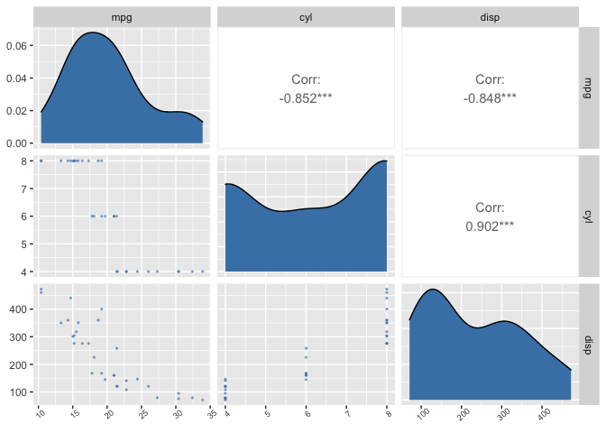

The goal of projectPackage is to provide simplified functions to do data preprocessing for exploratory data analyses.
Installation
You can install the development version of projectPackage from Github like so:
# install.packages("devtools")
devtools::install_github("DSCI-310-Group-11-package")Usage
Often times, when dealing with data, we want to tidy our data by removing columns from our data set. It can get monotonous writing and seeing the same lines of code over and over again across different projects, so projectPackage::data_cleaning() solves that.
library(projectPackage)
tidy_data <- data_cleaning(mtcars, c("drat","vs"))
head(tidy_data)
#> mpg cyl disp hp wt qsec am gear carb
#> Mazda RX4 21.0 6 160 110 2.620 16.46 1 4 4
#> Mazda RX4 Wag 21.0 6 160 110 2.875 17.02 1 4 4
#> Datsun 710 22.8 4 108 93 2.320 18.61 1 4 1
#> Hornet 4 Drive 21.4 6 258 110 3.215 19.44 0 3 1
#> Hornet Sportabout 18.7 8 360 175 3.440 17.02 0 3 2
#> Valiant 18.1 6 225 105 3.460 20.22 0 3 1And if we want to create a recipe, we can easily create that using projectPackage::recipe_scale_center() instead of writing so many lines of code.
recipe_scale_center(mtcars, mpg ~ hp)
#> Recipe
#>
#> Inputs:
#>
#> role #variables
#> outcome 1
#> predictor 1
#>
#> Operations:
#>
#> Centering for recipes::all_predictors()
#> Scaling for recipes::all_predictors()Lastly, if you want to create a ggpairs correlation matrix plot, this package also covers that, and also makes it prettier!
correlation_graph(mtcars[1:3])